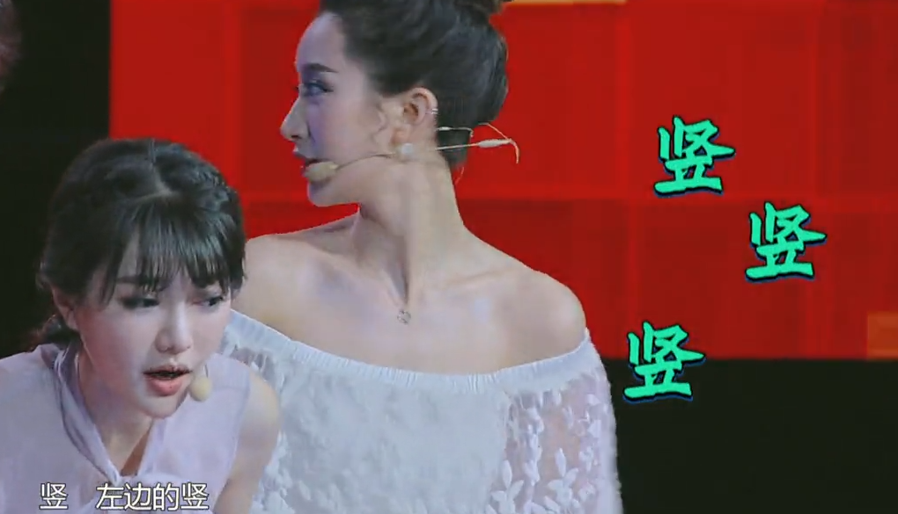
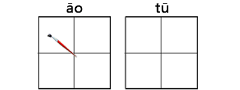
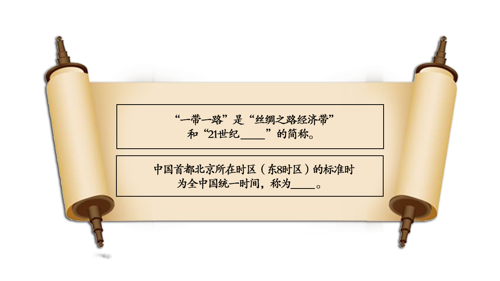

2016-10-25阅读（2,221）

一个凹字难不倒我们。

一个凸字难倒了女主播们。

笔画笔顺易错字集锦
一、横
1.末笔写二
冉（再、苒）–笔顺：竖、横折钩、中竖、末笔写二。
里（理、童）–笔顺：先写甲，后写二。
重（踵、董）–笔顺：撇、横、写曰，中竖、再写二。
垂（捶、棰、锤）–笔顺：先写千、后写艹，再写二。
【注意】并排三、四横者不按此规律：
堇ｊǐｎ(谨、槿）–末二笔为竖、横。
隹ｚｈｕī（谁、难）–末二笔为竖、横。
2.土、士分开。
土–寺（侍、诗、痔、等）周、袁、幸。
士–吉（洁、桔、结、秸）志、壳、声、喜、嘉、壹、壶、壮。
3.天、夭分开。
天–吞、蚕、忝ｔｉǎｎ（添、舔）、奏（凑）。
夭–乔（侨、桥、骄、娇）岙、袄、妖。
4.王、壬分开。
王–呈（程、逞）。
壬–任（凭）廷、淫。
5.首笔是横不是撇：丰（蚌、艳、契）、耒ｌěｉ(耕、耘、耙）。邦（帮、梆、绑）的第四笔是撇。刊的第三笔是竖。
6.横“山”的中横向左向右出头不出头。中横向右不出头–寻、帚、刍（邹）当、雪、扫、妇、侵。
横“山”有竖穿过时中横向右要出头–聿ｙù(建）秉、捷、唐、康、争、兼。
中横向左都出头–疟、虐（谑）末笔笔顺：横、竖折、中横。
7.讯的右旁和丑笔顺不同。
讯的右旁（汛、讯、迅）–笔顺：横折弯钩、横、竖。（末二笔为十）。
丑（扭、纽、钮）–笔顺：横折、竖、横、横（末二笔为二）。
8.毋、贯笔顺。
毋（ｗú）笔顺：竖折、横折钩，［先］撇、［后］横（两边出头）。
贯的上部部件–笔顺：竖折、横折、［先］竖、［后］横（两边出头）。
9.衰的笔顺。中间部件：竖、横折、［中间］长横（两边出头）、短横（堵口）。
10.皮的前三笔笔顺：横钩、撇、竖。
二、竖
1.竖与撇之分。临、监、坚、竖、紧：第二笔是竖，不是撇。旧：第一笔是竖。归：第二笔是撇。
2.“周”与“同”第一笔不同。同、冈、网、罔：第一笔是竖。周、用：第一笔是撇。
3.“月”第一笔有变化。育、肯、胃、有、肩：月在下，首笔为竖。肚、肌、肠、期、朗：月在左右，首笔为撇。
4.强调后写竖。假、暇、遐（霞）–中间部件前三笔笔顺：横折、横、竖。报、服–右旁前两笔笔顺：横折钩、竖。
5.出头与不出头：出头–由（黄寅）、黾（渑、绳、蝇）奄（俺、淹、掩）。不出头–龟（阄）。出头–异、弄、弃、弁、弈、算、弊。不出头–畀ｂì(痹、箅、鼻）。出头–圣（怪、坚）。不出头–泾、径、经、劲、茎、颈。
6.号、考、污–末笔向上不出头。末两笔笔顺：横、竖折折钩。“考”字下部不能如阿拉伯数字“5”。
7.收的左旁，叫、纠的左旁–竖提与竖不交叉。不能写如阿拉伯数字“4”。
8.做左偏旁时向右不出头：身（射、躬、躲）–第六笔横、第七笔撇，都向右不出头。舟（舰、般、航）–第五笔横，向右不出头。
▲注意：耳（取、职、联）–做左偏旁时末笔改提，可出头。
9.非字的笔顺与笔画：非（罪、韭）笔顺：［左］竖（不是撇），三小横（最后一小横不为提），［右］竖、三小横。
三、撇
1.应该撇通下来：免（兔、挽、勉）、奂（唤、换、涣）、象（像）、鬼（傀、愧）、卑（婢、碑）–第六笔都是一撇通下来。
2.不是一笔通下来–麦七画、美九画、敖（傲、熬、遨）十画、象十二画。
3.不要多一撇–畏（喂、偎、煨）、展（辗、碾）、代、武、贰。
4.先撇与后撇–先撇：九、及。后撇：刀、力、乃、万（笔顺：横、横折钩、撇）、方（笔顺：点、横、横折钩、撇）。
5.撇向左出头与不出头：出头–化（华、花、讹）右旁笔顺：［先］撇，［后］竖弯钩，两笔之间相交叉。不出头–匕ｂǐ（比、北、此、死、旨、尼、老）、仑（论、伦、论、轮）笔顺：［先］撇、［后］竖弯钩，两笔不相交叉。比左旁笔顺：横、竖提。北左旁笔顺：竖、横、提。此左旁笔顺：［中］竖、横、［左］、提。
6.末笔为人：火笔顺：点、［右上］小撇、［中］撇、捺。臾笔顺：［左上］小撇、竖、短横、［右］横折、短横、［托底］横，最后写人。爽笔顺：横、［左］撇、点、撇、点、［右］撇、点、撇、点、最后写人。脊上部笔顺：［左］点、提、［右］小撇、点、［中］写人。
▲注意兆笔顺：撇、点、提、竖弯钩、撇、点，与脊的上部笔顺不同。
四、点
1.有点无点：有点–市ｓｈì（柿、铈、闹）。无点–沛的右旁（沛、肺、芾），中间竖向上出头。沛七画。尧（浇、挠、绕、烧），右上无点。步（涉），左下无点。染右上不是丸。琴下无点。纸下无点（低下有点）。
2.先点与后点：先点点–义、为（笔顺：点、撇、横折钩、［内］点）。后点点–叉、发、拔、成（凡从戈者均末笔为点）。
3.点点的顺序：母笔顺：竖折、横折钩（两笔收尾处相交叉）、点、横、点。（不要写完横再点两点）。凡从母者：拇、姆、毒、每、诲、悔、霉均如此。舟（船、航）、后三笔笔顺：点、横、点。丹（彤）的末两笔笔顺：先点、后横。州的笔顺：点、撇、点、竖、点、竖。鬯ｃｈàｎｇ的笔顺：撇、斜点、［上］点、［左］点、［右］点、［下］点、竖折、竖、撇、竖弯钩。
五、折、提、钩
1.横折与竖折：片–末笔为横折，共四画。牙–第二笔为竖折，共四画。乐–第二笔为竖折，共五画。舛ｃｈｕǎｎ（桀、舜、舞）、降，末三笔为：横、竖折、竖（末笔向上出头）。既–右旁为横、竖折、撇（向上不出头），竖弯钩。
2.从区者末笔为竖折：区、匹、臣、匡、匠、医、匪笔顺：［先］横、［再写］里边被包围的部件，［最后］竖折一笔写完。
3.左偏旁末笔横改提：土（培场）、王（玩球）、止（歧武）、血（衅衄）、耳（取、联）、子（孙、孩）、马（驰、驶）、鸟（鸵）。
4.车字笔画、笔顺的变化：车做独体字时笔顺–横、竖折、横、竖。车做左偏旁时（轻、较、转）笔顺–横、竖折、［先］竖、［最后］提。
5.注意竖提：切（窃、砌、沏）左旁不是土。瓦（瓯、瓷、瓶）笔顺：横、竖提、横折弯钩、点。
6.发与拔的右旁不同：发（泼、拨）第一笔是竖折。拔的右旁（祓、绂）第一笔是横。
7.有钩与无钩：有钩–七、儿、几（冗、亢、机、秃、虎）无钩–朵、殳（没、投、沿、铅）有钩–东、杀、条、杂、亲、余（末笔均为点，不为捺）。无钩–不、木、未、末、禾、耒、来、束。
8.木字钩与捺的变化：木字做独体字时，竖无钩，末笔为捺。木字构成合体字时：作左偏旁时：无钩、捺改为点、如枯、杆、树。作右偏旁时：无钩，捺不变，如体、沐、林。在上部或下部时：无钩，捺不变，如杏、李、杰；桌、案、荣、采。但遇到有并行的捺时，为了避让，而将捺改点如：漆、茶、荼。
9．“小”字钩的变化：在字的上部时无钩–尘、尖、少（抄、纱、省、劣、雀）。在字的下部时有钩–尔（你）、叔（菽、淑）、京（凉、就）、忝、示（宗、票、奈、捺）。
▲注意“尔”字例外–玺、您，在字上部时也有钩。
六、其他
1．几种顺序都有：先中间，后两边–丞、承、率、燕、兜、燮、夔。从左到右–辔、盥、鬻、嬴、赢、羸、彘。
▲注意：肃的笔顺：横折、横（向右出头）、横，［中］竖，再写［左］撇、［右］竖，最后［里边］小撇、点。齑的笔顺：先写文，［左］撇、［右］竖，最后［中］写韭。
2．堵口与不堵口。己ｊǐ–记、纪、起、忌、岂（凯、铠）、改、妃。已ｙǐ–巳ｓì–包、苞、导、异、巷、祀、圯、汜、巽、熙。犯的右旁–范、苑、宛（碗）厄（扼）、卮、危、卷（倦）。
3．区别几个有戈的字：戊ｗù、戍ｓｈù、戌ｘū、成、咸、戚–笔顺都是先写厂，再写内部部件，最后：斜钩、撇、点。戎ｒóｎｇ、戒ｊｉè（诫、械）–相同部分笔顺：长横、短横、在短横上加撇，（“戒”再多一竖），最后，斜钩、撇、点。
4．仑与仓要分开：仑–伦、沦、抢、论轮。仓–伧、沧、抢、枪、苍。
5．癸与祭的字头要分开：癸–揆、睽。登（澄、橙、瞪、凳）。祭–察、蔡。
6．学与党的字头要分开：学、鲎、觉。党、堂、常、棠、尝。兴、举、誉。佥（检、验、签）。光、当、肖。
7．字的末尾笔画不同：呙（涡、蜗、莴、窝）–末两笔：撇、点。离（漓、螭、璃、禽）–末两笔：撇折、点。禹（属、踽）、禺、隅、愚、寓–末三笔为竖、提、点。
8．冒字上部部件特殊：冒（帽、瑁、冕、勖）上部部件第三笔、第四笔不触及到左、右两边，有时可写成秃宝盖下加二。不要写成曰ｙｕē或日ｒì。
9．辰字起笔先写厂：辰（振、唇、辱、晨）笔顺：横、撇、横、横、竖提、撇、捺。
10．敝字的笔顺：敝（撇、弊、憋、蹩、鳖、蔽）的左旁笔顺：点、撇、［左］竖、横折钩、［中］竖（向上出头）、［里边］撇、点。敝十一画。
11．女字的笔画、笔顺：独体字女笔顺：撇点、撇、横（横与撇只接触，不交叉，横向右略长。）女字做左偏旁时，笔顺同上，不同的是横与撇接触后，不向右略长，构成一定角度即可。横不改为提。
12．兖字中间不是口：兖、衮（滚、磙）笔顺：六下是厶，不是口。
13．三个特殊字形的笔顺：凹āｏ：竖、横折折、竖、横折、横，共五画。凸ｔū：［上］竖、［中］横、［下］竖、横折折折、横，共五画。噩è：横、竖、［左］口、［右］口、横、［左］口、［右］口、横，共十六画。
14．部分字的笔画、笔顺：了：横钩、竖钩，两画。之：点、横撇、捺，三画。廿ｎｉàｎ（二十的意思），革字头，笔顺：先横、竖、竖、横，共四画。卅ｓà(三十的意思），带字头，笔顺：先横、再撇、竖、竖，共四画。
15．部分部首的笔画，笔顺：艹（草字头）：横、竖、竖，三画。讠（言字旁）：点、横折提，两画。辶（走之儿）：点、横折折撇、捺，三画。阝（双耳刀）：横撇弯钩、竖，两画。忄（竖心旁）：［先］点、点，［后］竖，三画。犭（反犬旁）：［先］撇、［再］弯钩、［最后］撇
【答题环节】
看到这，大家学到多少新知识呢？我们也来让大家测试一下，看看自己的中文水平有没有进步呢？请看下面的两道题。

答案： 第1题：海上丝绸之路
第2题：北京时间
【有关汉语桥】
“汉语桥”是由孔子学院总部/国家汉办举办的国际中文赛事，是世界人文交流领域的知名品牌活动 。“汉语桥”中文比赛已成为外国学生学习汉语，了解中国的重要平台，在中国与世界各国青年之间架起了一座沟通心灵的桥梁。
内容制作：晁壮、李畅